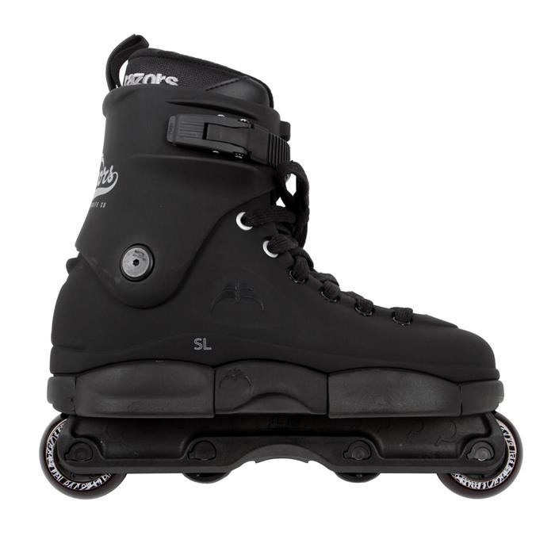
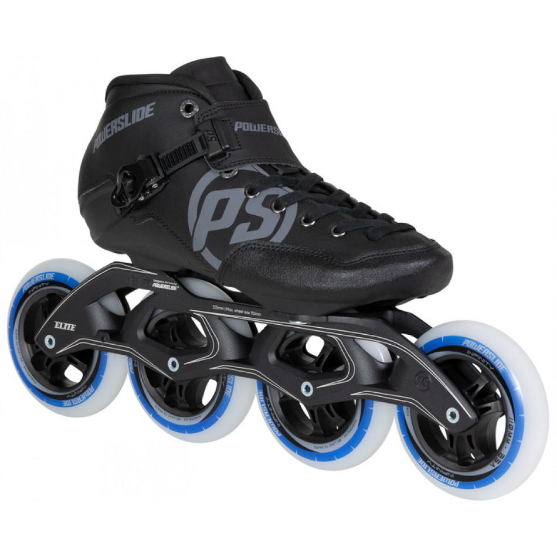

Accueil
Présentation
Ce site a été fait pour un exposé en SNT (sciences numériques et technologique) par Jaffray Daniel et Gaillard Jules. Il a été fait sur le sujet: "Le Roller".
L'histoire
Quelques dates
C'est en 1760 que John Joseph Merlin (1735-1803), originaire de Huy, ville de la Belgique actuelle qui était à l'époque en Pays-Bas Autrichiens, fixe deux rouleaux en métal en ligne sous une plaque de bois, pour remplacer le patin à glace en été. Le Français, Charles-Louis Petibled reprend le concepte de patin à glace en été sur des patins de bois et de métal à trois roues en lignes muni d'un butoire en guise de frein. C'est aussi lui qui a déposé le premier brevet du patin à roulletes le 12 novembre 1819. En 1863 un brevet pour des patins à essieux (ancêtre du quad) est déposé par James Plimpton le 4 janvier. La première patinoire à roullettes fut construite en 1863 à New York. Il a fallut attentre 1877 avant de voir arriver la première patinoire couverte rue Veydt à Bruxelles le Royal Skating. En 1876 un hall à Paris destiné à faire du roller crée une émeute à son ouverture. En 1884 les roues sont adaptées avec des roullements à billes. C'est en 1969 que les rollers que nous connaissons aujourd'hui font leur première apparition par le japonais Yoshisada Horiuchi, il ne faudra attendre que 10 ans avant d'avoir la version finale du patin à roulettes.
Définitions
Du dictionnaire La Rousse
Variété de patin à roulettes, constitué d'une platine munie de quatre roues et fixée à une chaussure spéciale. (On distingue les rollers en ligne, dont les quatre roulettes sont alignées à l'instar de la lame du patin à glace, et les quads, dont les roulettes sont disposées deux à deux à l'extrémité de deux essieux.) Sport pratiqué avec ces patins, et comprenant le patinage artistique, la course, la danse, le rink-hockey et le roller acrobatique (slalom, saut, rampe).
Du dictionnaire Le Robert
ANGLICISME: Patin à roulettes auquel est fixée une chaussure haute et rigide, des rollers. - Faire du roller: patiner avec des rollers.
De Wikipédia
Le patinage à roulettes ou roller (abréviation de l'anglais anglais : roller skating qui signifie « patinage à roulettes »), est un mode de déplacement qui consiste à se déplacer sur des chaussures montées sur roues, appelées patins à roulettes ou rollers.
Les différents types de rollers
Les patins à roulettes

"Patin à roulettes" est le nom donné aux anciens rollers, le quad.
Le quad
Ce roller est l’évolution du patin à roulettes original. Le Quad est le seul roller vraiment adapté à la pratique de la danse.
Le roller fitness

Le roller fitness est le roller le plus répandu, il est parfait pour les trajet rapide en ville.
Le roller freeskate

Le roller freeskate est un roller maniable, pratique pour le slalom, le slide et d'autres accrobaties urbaines modérées.
Le roller agressif
Le roller agressif ou roller street est utilsé sur rampe et dans les skate park pour réaliser des cascades, glissades et figures acrobatiques.
Le roller de vitesse
Le roller de vitesse est adapté seulement du fait de sa longueur au courses.
Le roller tout terrain

Le roller tout terrain est conçu pour les chemins de terre, d’herbe, de rocaille, voir même les endroits un peu sableux.
Sources
Nos Pages
Sur ce lien tu trouveras toutes nos pages sur le site.
Nos sources
Sur ce lien tu trouveras toutes nos sources.Le roller fitness
Ces rollers sont prévus pour une utilisation sur route ou piste pour faire de la randonné roller. Ces rollers sont assez confortable et fluide pour permettre une certaine facilité d'utilisation sur route ou piste sur de longues distances.
Le roller freeskate
Ces rollers sont prévus pour une utilisation en ville et sont très polyvalent. Ils permettent de s'adapter à un peu toutes les situations sans être spécialisé dans une en particuliers.
Le roller agressif
Ces rollers sont destinés à réaliser des figures ; tel que le grind ou le pipe. Ils sont bien souvent plus résistants et tiennent bien au pied de manière à permettre de réaliser des figures en tout genre et de manière optimale. Ils sont souvent équipés d'une encoche au niveau de la platine afin d'aider à faire des grinds.
Le roller de vitesse
Ce type de roller est prévu comme son nom l'indique pour favoriser un maximum la fluidité des roulements de manière à maximiser la vitesse que l'on peut atteindre avec. Ils sont la plupart du temps utilisés dans le cadre de compétition.
Les patins à roulettes
Le patin à roullettes fait sa première apparition en 1969 mais sera vite remplacer par le roller fitness.
Le quad
Ces rollers sont composés de 4 roues sous une chaussure, généralement ils se fixent grâce à des lacets. Les quatre roues sont deux à deux parallèles comme sur une voiture. Ils servent surtout lors des courses.
Le roller tout terrain
Celui-ci est un peu comme le roller fitness sauf que celui-ci est encore plus étudié pour être confortable et le plus économe en énergie possible de manière à vous permettre de couvrir de grande distances.
Nos pages
Nos sources
Les roulements à billes
Au XVe siècle, en 1485, Léonard de Vinci, notre inventeur florentin favori, découvre le principe du roulement. S’interrogeant sur son fonctionnement, il en dessine plusieurs croquis. Ce sont vraisemblablement les premiers dessins techniques représentant le mécanisme d’un roulement à billes. L’inventeur comprend qu’en isolant les éléments roulants du dispositif, on empêche les frictions liées aux frottements des différents éléments et fluidifie le mouvement.
C’est en 1779, en pleine révolution industrielle, que l’ingénieur et physicien français Charles-Augustin Coulomb va pour la première fois façonner et développer l’usinage des roulements à billes. Mais ce n’est qu’en 1794 qu’un Gallois, Philip Vaughan, dépose le premier brevet.
En 1907, 422 ans après les dessins de Vinci, l’ingénieur suédois Sven Wingquist met au point un roulement à billes assez robuste pour améliorer les performances des machines de textiles de son employeur, lançant son application industrielle.